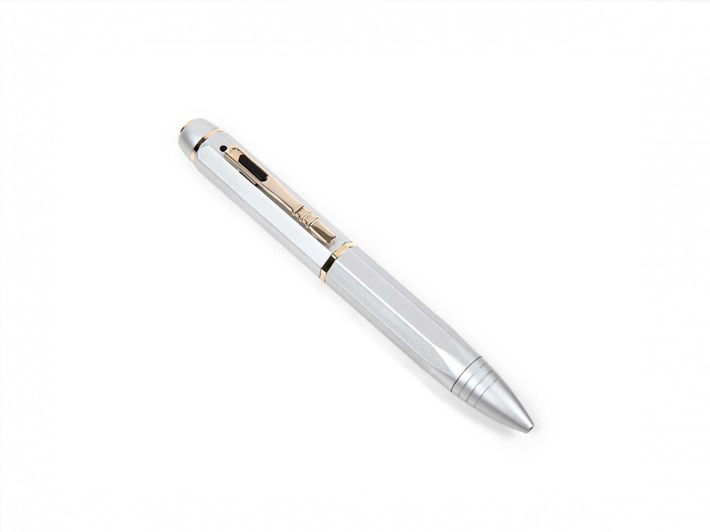
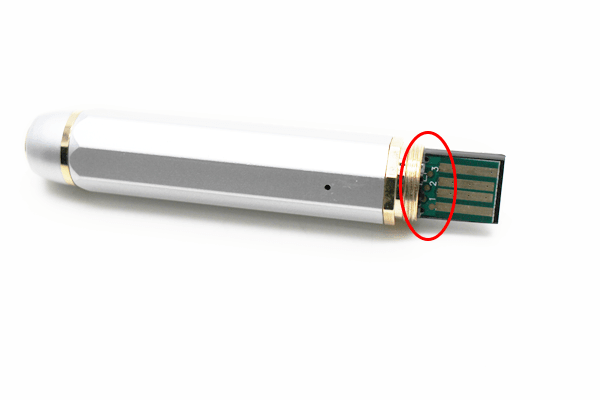
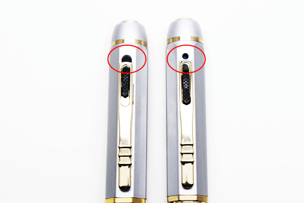
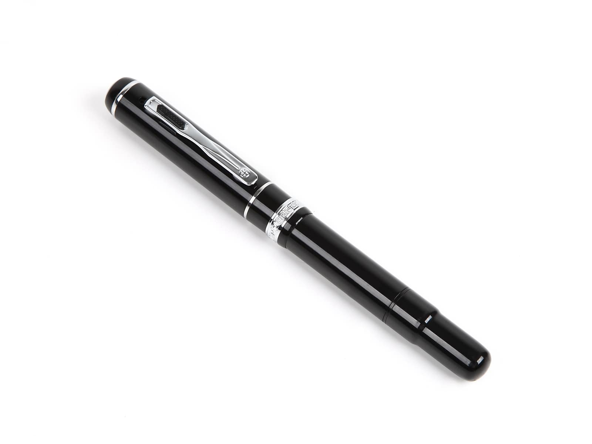
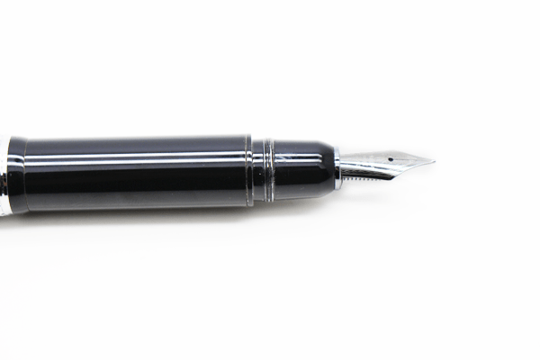
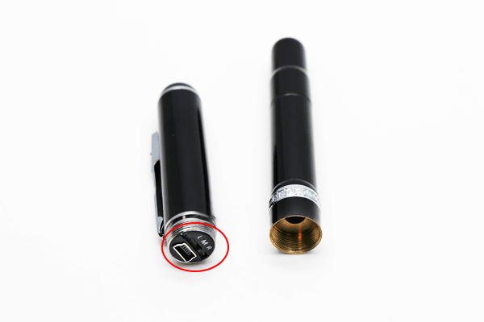
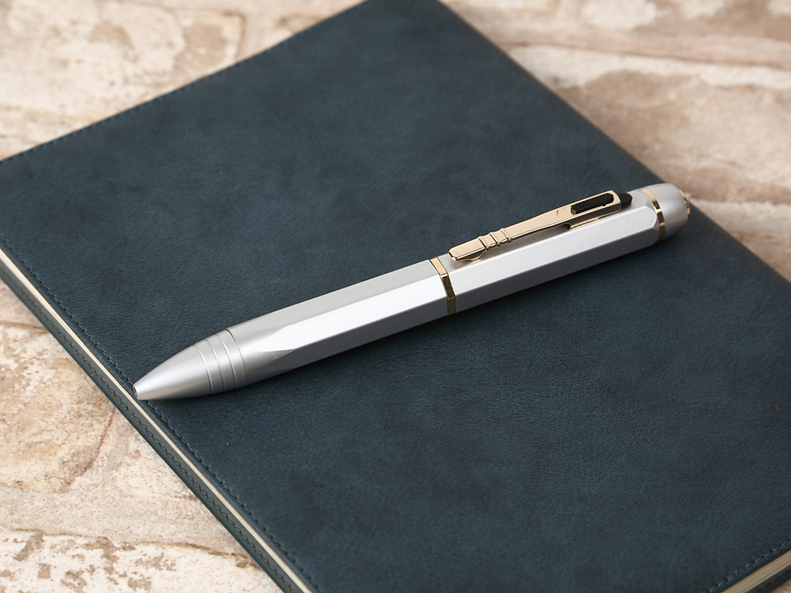
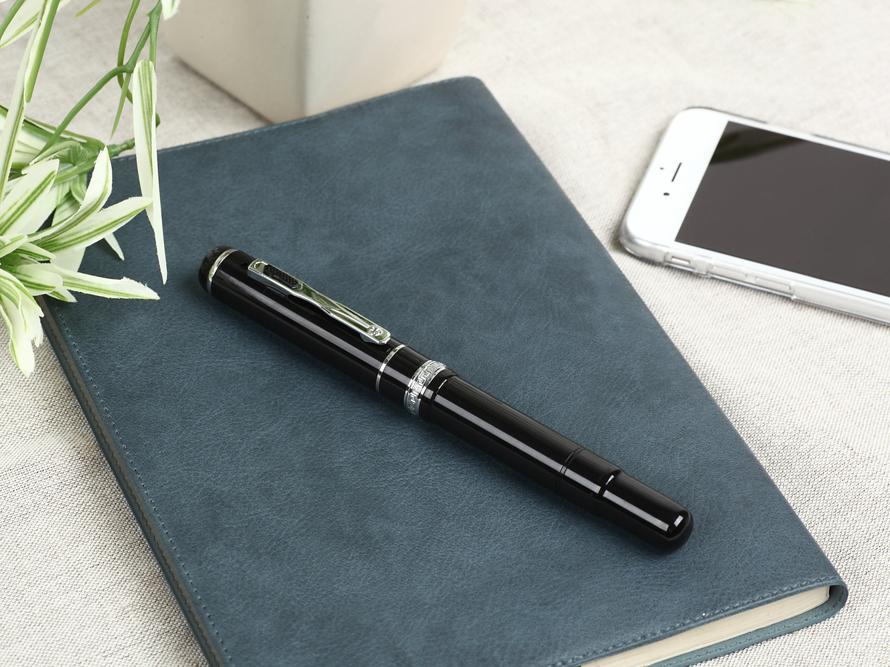

機能満載！スタイリッシュなペン型カメラのご紹介

もう季節はすっかり秋！一年の流れは早いものですね。
急激な気温の変化がある毎日ですが、体調等壊さないよう、
お気をつけください！
今回のブログでは、2種類のペン型カメラをご紹介したいと思います。
当店では様々な種類のカメラを取り扱っていますが、小型で、どんな場所にでも
持ち歩ける手軽さから人気なのが「ペン型カメラ」です！
今回はそんなペン型カメラの中でも、特にデザイン性に優れた、
スタイリッシュな商品をご紹介いたします！
どちらの商品も、見た目はどこにでもある、ただの「ペン」ですが、超小型のカメラを内蔵しております。
実際にオフィスやご自宅で「ペン」として文字を書くことも可能となっていますので
実用性の高さもポイントです！
それでは早速おすすめの商品をご紹介いたします！
まずご紹介するのは「SPP-5」！

動画、静止画が撮影できるのに加えて、録音機能(ボイスレコーダー昨日)も搭載！
ボディはきれいなホワイト！おしゃれに気を遣う男性や、女性にだっておすすめできる商品です！
本体の構造はこんな感じです。↓↓

本体のちょうど真ん中あたりをクルクルっとキャップのように外すと、このような状態になります。
赤い丸の部分に操作で使用するスライドスイッチがございます。
カチッとスライドさせることで撮影モード(動画や静止画、録音等)を切り替えて使用します。
また、撮影した映像を確認する時には、付属のケーブルを使用し本体のUSB接続口とPCとを接続すると
簡単にデータを確認できます。
また、こちらの商品には、隠れた便利ポイントの「レンズカバー」を搭載しています。
レンズカバーを使用した場合と、使用してない場合はこんな感じです。↓↓

画面左側がレンズカバーを使用した状態、画面右側がレンズカバーを使用していない状態です。
レンズカバーを使用することで、カメラレンズがより目立たなくなっていることが
お分かりいただけますでしょうか・・・
レンズカバーはスライド式になっていて、カメラ機能を使う時にはレンズカバーを下げた状態でないと
ちゃんと映像が映らなくなってしまいますが、撮影しないときには、レンズカバーを上げることで
カモフラージュ性を高めるのと同時に、レンズが割れたりすることにないよう、保護の役割も果たします。
特長的な白い外観は当商品だけ！
スーツやジャケットの胸ポケットに挿した状態で撮影すると自然に撮影できますので
会議の議事録の作成や、打ち合わせ等のメモ代わりとして使用したりできますので、
様々なシーンで活躍いたします！！
次にご紹介するのは「SPP-7」！

こちらも動画、静止画、そして録音機能(ボイスレコーダー昨日)が搭載！
挿画の解像度は1080Pに対応し、小型カメラとしては高画質な映像が撮影できるモデルです。
こちらの商品は、当店取扱商品の中で唯一の「万年筆タイプ」！！
他のペン型カメラとよりも、さらに高級感のある、落ち着いたデザインに仕上がっています。
大事なペン先が傷つくことの無いように、きちんとキャップもついていますよ！
こちらが万年筆のペン先の画像です。↓↓

そして、本体の構造はこんな感じです。↓↓

こちらも本体のちょうど真ん中あたりをクルクルっとキャップのように外すと、
このような状態になります。
赤い丸の部分に操作で使用するスライドスイッチがございます。
スライドスイッチで撮影モード(動画や静止画、録音等)を調整した後は、
本体てっぺんにあるボタンで簡単に操作できます！
「万年筆」ってなんだか高級感がありますよね！
落着きと貫禄を感じさせるデザインで幅広い年齢層の方にお勧めできる商品です！
今回ご紹介した商品のどちらも「16GBメモリー」を内蔵しておりますので
面倒なmicro SD cardの出し入れをすることなく簡単に撮影ができます。
わざわざmicro SD cardを別に購入する必要もなく届いたその日から
すぐに使うことができてとっても便利です！
また、連続で撮影できる時間がフル充電の状態で「50～70分」程もありますので、
ちょっとした打ち合わせや、会議の撮影などにちょうど良い稼働時間です。
さらに詳しい商品のスペックなどご覧になりたい方は、以下よりご確認いただけます！
実際の画質や操作方法の動画も掲載しておりますので、ご興味のある方はぜひ、ご覧くださいませ！
【 SPP-5 】

【 SPP-7 】

また、ご紹介した商品以外のペン型カメラをご覧になりたい方は、
以下より「ペン型カメラ」の商品一覧をご覧いただけますのでそちらも併せてご覧下さいませ！
いかがでしたでしょうか・・？
今回はスタイリッシュに使用できるペン型カメラをご紹介いたしましたが、
当店ではご紹介した商品以外にも、様々な種類の小型カメラを取り扱っています！
ご用途に併せて商品を選ぶことが、便利に小型カメラを使用するうえで最も重要です！
「どれがいいかな？」そんなお悩みはぜひ当店までお気軽にお問い合わせください！
条件に合わせた商品のご提案をさせていただきます！
当店ではHPからのご注文、お電話でのご注文を受け付けております。
また、お気づきの点や疑問点等のお問い合わせにも対応しております！
HPからは24時間、お電話の場合は10：00～12：00、13：00～17：00の時間帯で受付中！
365日休むこと無く営業中です！どうぞお気軽にご連絡下さい(^^♪
当店HPはコチラ↓↓からご覧いただけます！
【ＳＰＹ－ＯＮＬＩＮＥ－ＳＨＯＰ】

ご相談・ご質問はこちらから!!（店舗サイトのお問合せページへ飛びます）
mail：shop@spy-online.jp
tel：042-719-3319 (対応時間10：00～12：00、13：00～17：00)
それでは今日はこのへんで・・次回更新をお楽しみに！
また近々お会いしましょう(＾＾)